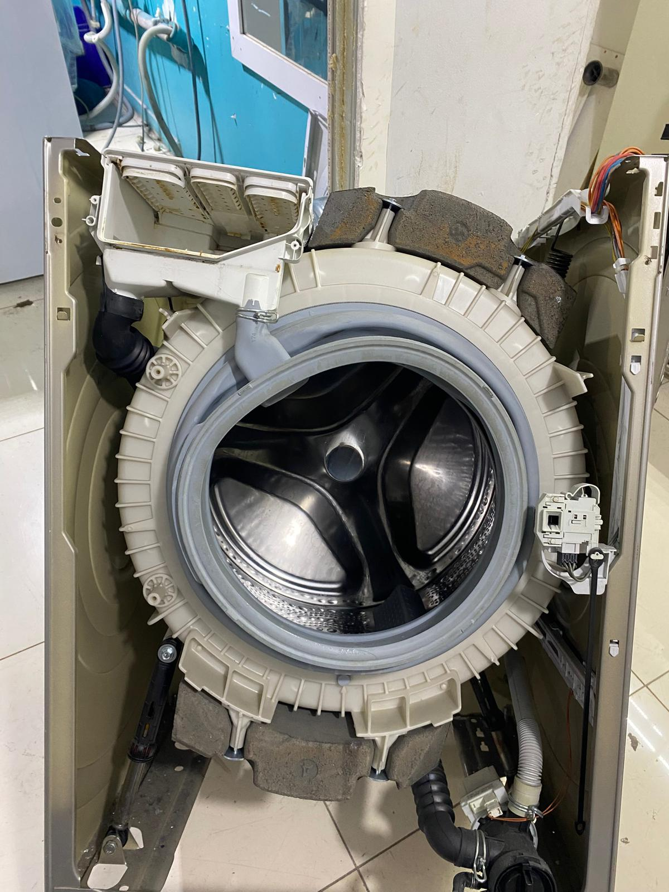
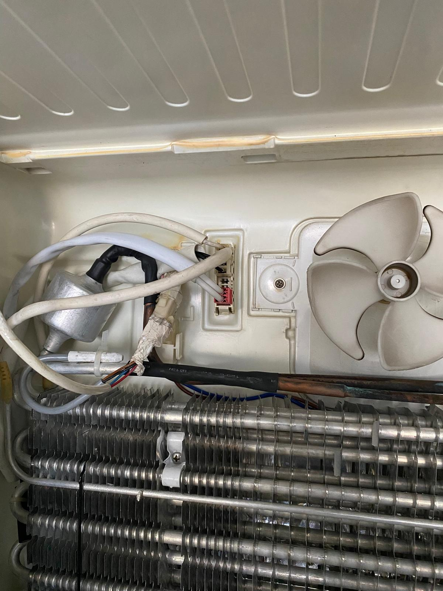
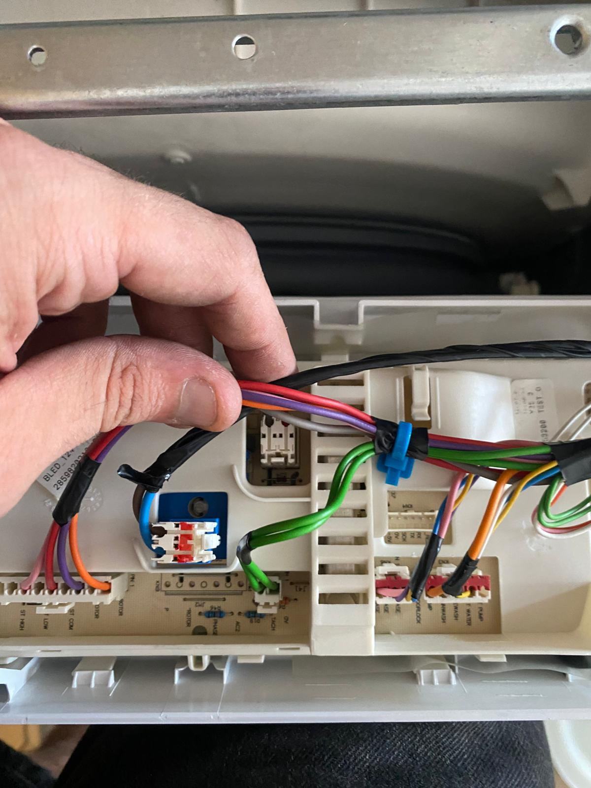
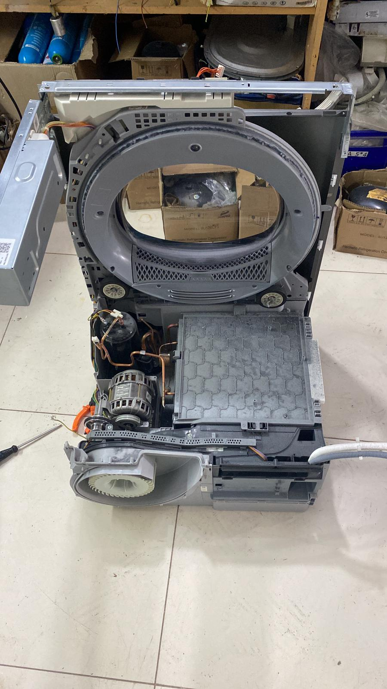
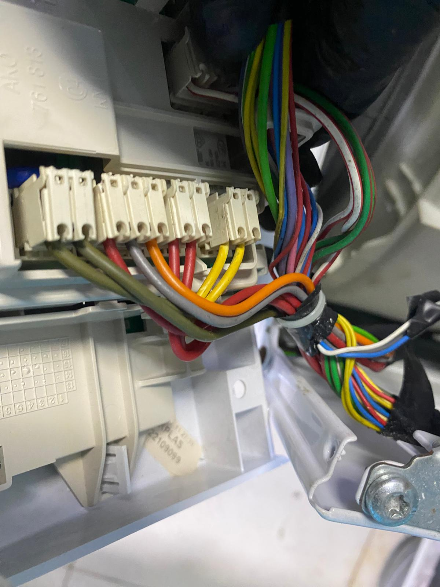
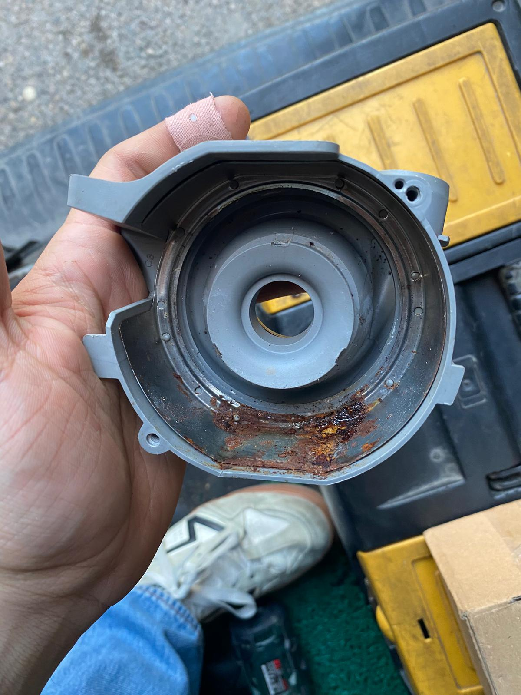
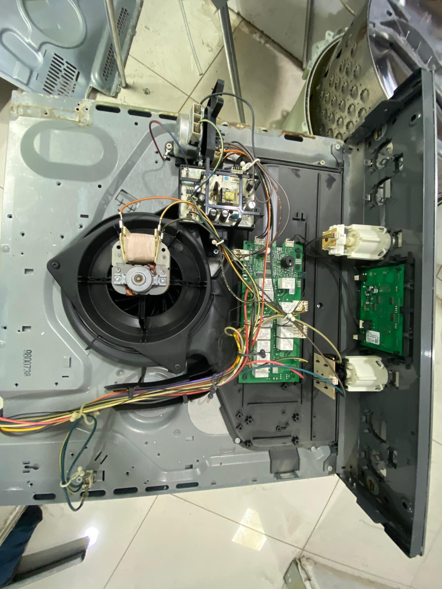
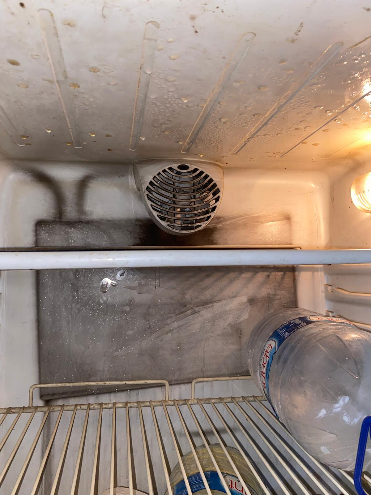

TEKNİK SERVİS
Buzdolabı Servisi
Soğutmama, aşırı ısınma, su akıtma, kompresör ve elektronik kart sorunlarında teknik inceleme ve servis desteği.
Hizmeti İncele →Buzdolabı, çamaşır makinesi, bulaşık makinesi, fırın, klima ve kombi için profesyonel teknik servis ve onarım desteği. Pendik, Kurtköy, Tuzla ve çevresinde hizmet veriyoruz.

Pendik / Orhangazi bölgesindeki konumumuzu açabilir, tek dokunuşla yol tarifi alabilirsiniz.
Fotoğraflar, sahada gerçekleştirdiğimiz teknik inceleme ve servis çalışmalarından seçilmiştir.




Arızanıza uygun hizmet sayfasından sık görülen sorunları inceleyebilir ve doğrudan iletişime geçebilirsiniz.
Soğutmama, aşırı ısınma, su akıtma, kompresör ve elektronik kart sorunlarında teknik inceleme ve servis desteği.
Hizmeti İncele →Dönmeme, sıkmama, kapak, kazan, rulman, su akıtma ve elektronik kart sorunlarında yerinde teknik destek.
Hizmeti İncele →
Su akıtma, yıkamama, pervane, deterjan haznesi, tahliye ve elektronik kart sorunlarında teknik servis desteği.
Hizmeti İncele →Kurutmama, ısıtmama, aşırı ses, filtre ve program sorunlarında teknik kontrol ve servis desteği.
Hizmeti İncele →
Isıtma, rezistans, termostat, ateşleme ve panel sorunlarında teknik destek ve arıza tespiti.
Hizmeti İncele →
Temsilî Pexels görseli.
Klima bakım, temizlik, performans kontrolü ve uygun arızalarda teknik destek.
Hizmeti İncele →
Temsilî Pexels görseli.
Isınma, sıcak su, basınç ve genel çalışma sorunlarında teknik destek talebinizi iletebilirsiniz.
Hizmeti İncele →
Soğutmama, aşırı buzlanma, ses ve elektronik kontrol sorunlarında teknik servis desteği.
Hizmeti İncele →
Cihaz türünü ve yaşadığınız sorunu paylaşın.
Marka, model ve arıza belirtisini mümkün olduğunca net yazın.
Uygunluk durumuna göre talebiniz değerlendirilir.
Yapılan işlem sonrasında temel çalışma kontrolleri gerçekleştirilir.
Yorum metinleri özetlenmeden ve pazarlama diliyle yeniden yazılmadan, müşterilerin Google İşletme Profilinde paylaştığı haliyle gösterilir.
Buzdolabı tamiri için aynı gün 2 saat içinde geldiler. Çok temiz iş yaptılar. Başka tamircinin bize söylediği fiyatın neredeyse yarısına mal oldu. Temiz iş yaptıkları gibi kazıklamaya da çalışmadılar. Memnun kaldık.
Gerçekten çok memnun kaldım. Usta çok ilgili, güler yüzlü ve işinin ehli. Sorunumu anlattığımda hiç bekletmeden hemen gelip ilgilendi ve kısa sürede tamirini yaptı. İşini titizlikle yapan, güvenebileceğiniz bir usta.
Güncel yorumların tamamı Google İşletme Profili üzerinde yer alır.
Daha fazla seçilmiş yorumu görüntüle →Yerinde teknik servis talebiniz için cihaz türünü, marka-modelini ve arıza belirtisini paylaşabilirsiniz. Tuzla servis uygunluğu için önceden iletişime geçebilirsiniz.
Aydınlı, İçmeler, Şifa, Mimar Sinan, Postane ve Tepeören gibi bölgelerde servis uygunluğunu telefon veya WhatsApp üzerinden teyit edebilirsiniz.
Tuzla Hizmet Bölgesini İncele →Cihazın markasını, modelini ve yaşadığınız sorunu gönderin.
☎ Hemen AraArıza bilgisinden yerinde kontrole kadar süreci açık ve anlaşılır şekilde yürütüyoruz.
Cihaz türünü, marka-modeli, arıza belirtisini ve bulunduğunuz bölgeyi telefon veya WhatsApp üzerinden paylaşın.
Pendik, Kurtköy veya Tuzla için uygun servis planlamasını ve iletişim adımlarını birlikte netleştirelim.
Cihazın durumu ve arıza belirtisi teknik olarak kontrol edilir; yapılabilecek işlem hakkında bilgi verilir.
Uygun işlem ve onay sonrasında cihaz için gerekli teknik servis çalışması gerçekleştirilir.
Telefon veya WhatsApp üzerinden cihaz türünü, marka-modelini ve arıza belirtisini paylaşabilirsiniz.